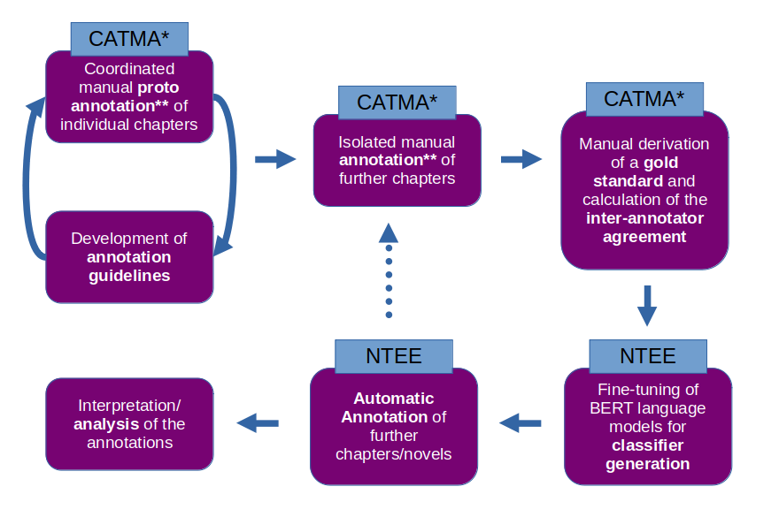

De casas y campos:
A Computational Analysis of Natural Places and Artefacts in Nineteenth-Century Novels
Ulrike Henny-Krahmer (University of Rostock)
January 16, 2025
University of Stuttgart
Slides at: https://hennyu.github.io/st_25/

Overview
- Computational Approaches to Narrative Space
- The Project CANSpiN
- Analysis of Natural Places and Artefacts in Nineteenth-Century Novels
- Research Questions
- Corpora and Methodology
- Analysis Results
- Conclusions and Next Steps
1. Computational Approaches to Narrative Space
Starting Point
- Computational Literary Studies (CLS): subfield of DH, computer-aided, usually quantitative analysis of literary texts, e.g. with regard to authorship, genre, epoch, on the basis of various text features
- Narrative texts: concepts from narratology - what can be examined with the help of computers?
- Narrative space: concrete space of the narrated world in which characters live, act, move
Levels of analysis for narrative space
- Space-referential expressions: linguistic expressions, e.g. named entities (“Stuttgart”), generic terms (“dining room”, “church”, “car”), deictics (“here”, “there”)
- Narrative functions of space-referential expressions: e.g. descriptions of the setting, event-related or mentioned space
- The spatial structure of the narrated world: semantic structure of the narrated spaces
Example: References to places (containers)
“A las tres, Roman y Gabriel montaron en un coche en la gran Plaza de Armas. [...] Roman se reclinó en el fondo del carruaje y con la cabeza oculta entre las manos, se dejó avasallar por la influencia de una triste meditación. [...] Pensó en su infancia tan serena, pasada al lado de su madre en un hermoso pueblecito de la costa veracruzana [...]” |
“At three o'clock, Roman and Gabriel got into a car at the large Plaza de Armas. [...] Roman leaned back in the back of the carriage and with his head hidden in his hands, he allowed himself to be overwhelmed by the influence of a sad meditation. [...] He thought of his childhood, so serene, spent at his mother's side in a beautiful little town on the coast of Veracruz [...]” |
Juan Díaz Covarrubias, La clase media, Mexico, 1858
Example: Event-related vs. mentioned places
“At three o'clock, Roman and Gabriel got into a car at the large Plaza de Armas. [...] Roman leaned back in the back of the carriage and with his head hidden in his hands, he allowed himself to be overwhelmed by the influence of a sad meditation. [...] He thought of his childhood, so serene, spent at his mother's side in a beautiful little town on the coast of Veracruz [...]” |
Juan Díaz Covarrubias, La clase media, Mexico, 1858
Example: Spatial structure of the narrated world
“At three o'clock, Roman and Gabriel got into a car at the large Plaza de Armas. [...] Roman leaned back in the back of the carriage and with his head hidden in his hands, he allowed himself to be overwhelmed by the influence of a sad meditation. [...] He thought of his childhood, so serene, spent at his mother's side in a beautiful little town on the coast of Veracruz [...]” |
car/carriage Plaza de Armas Mexico City Mexico Veracruz coast town |
created with Plotly.JS |
Juan Díaz Covarrubias, La clase media, Mexico, 1858
State of research
- Literary theory: elaborated concepts for narrative space (e.g. Dennerlein 2009; Piatti 2008; Ryan 2014; Lotman 1977)
- CLS: already some approaches to formalizing spatial concepts (mapping to text features, learning) (e.g. Viehhauser and Barth 2017; Barth 2022; Viehhauser 2020; Grisot and Herrmann 2023; Schumacher 2023; Soni et al. 2023)
2. The Project CANSpiN
Project: Computational Approaches to Narrative Space in 19th- and 20th-Century Novels (CANSpiN)
Goals:
|
Project Workflow
|

* CATMA 7 and the project-specific python package gitma_canspin |
 https://catma.de/
https://catma.de/
https://github.com/NEISSproject/ tei_entity_enricher |
Annotation Guidelines
Category set CANSpiN.CS1 for the annotation of space-referential expressions in narrative texts:
|
3. Analysis of Natural Places and Artefacts in Nineteenth-Century Novels
Research Questions
 https://commons.wikimedia.org/wiki/
https://commons.wikimedia.org/wiki/File:NYC_wideangle_south_from _Top_of_the_Rock.jpg https://commons.wikimedia.org/wiki/ File:Ayrshire_countryside_-_ geograph.org.uk_-_56514.jpg |
|
{kind=link}
{kind=link}
Corpus
- Corpus of 200 novels from the long nineteenth century (1840-1920) from Spain and Latin America
- Sources for the corpus: ELTeC-spa (Navarro Colorado 2021) and Conha19 (Henny-Krahmer 2021)
- Characteristics: 100 novels each; balanced regarding subperiods of 20 years; many different authors
Categories for Annotation
|
Six categories:
|
Annotation: Examples
| (1) “A las tres, Roman y Gabriel montaron en un cocheCONT-ART en la gran Plaza de ArmasCONT-ART.” | “At three o'clock, Roman and Gabriel got into a carCONT-ART at the large Plaza de ArmasCONT-ART.” |
| (2) “Pensó en su infancia tan serena, pasada al lado de su madre en un hermoso pueblecitoCONT-SET de la costaCONT-NAT veracruzanaCONT-REG [...]” | “He thought of his childhood, so serene, spent at his mother's side in a beautiful little townCONT-SET on the coastCONT-NAT of VeracruzCONT-REG [...]” |
(Examples taken from: (1), (2) Juan Díaz Covarrubias, La clase media, Mexico, 1858.)
Annotation: Examples
| (3) “En un divanOBJ-ART, frente á la chimeneaOBJ-ART, estaba reclinada la marquesa [...]” | “On a divanOBJ-ART, in front of the fireplaceOBJ-ART, the Marquise was leaning back [...]” |
| (4) “Una noche en que la lunaOBJ-NAT empezaba a menguar, y que algunas nubesOBJ-NAT cubrían el cieloCONT-NAT, estaban los dos sentados en una peñaOBJ-NAT [...]” | “One night when the moonOBJ-NAT was beginning to wane and some cloudsOBJ-NAT were covering the skyCONT-NAT, the two of them were sitting on a rockOBJ-NAT.” |
(Examples taken from: (3) Teodoro Guerrero, Anatomía del corazón, Spain, 1856. (4) Carolina Coronado, Jarilla, Spain, 1850.)
Annotation
|
 |
Classifier Generation
|

|
Analysis Results
|
|
Most Frequent Artefacts
| rank | token | number | |
|---|---|---|---|
| 1 | casa | house | 17,436 |
| 2 | puerta | door | 7,718 |
| 3 | calle | street | 4,584 |
| 4 | mesa | table | 3,123 |
| 5 | cuarto | room | 2,757 |
| 6 | sala | living room/hall | 1,935 |
| 7 | cama | bed | 1,906 |
| 8 | lecho | bed | 1,769 |
| 9 | ventana | window | 1,684 |
| 10 | habitación | room | 1,612 |
Most Frequent Natural Places
| rank | token | number | |
|---|---|---|---|
| 1 | cielo | sky | 4,179 |
| 2 | luz | light | 4,030 |
| 3 | sol | sun | 3,468 |
| 4 | aire | air | 2,215 |
| 5 | tierra | ground/earth | 2,119 |
| 6 | campo | field | 2,069 |
| 7 | mar | sea | 1,623 |
| 8 | sombra | shadow | 1,359 |
| 9 | árboles | trees | 1,347 |
| 10 | viento | wind | 1,321 |
4. Conclusions and Next Steps
- Recognition of spatial entities can still be improved
(0.75 score vs. 0.96 IAA) - Artificial, man-made places and objects are mentioned more frequently in the novels than natural ones
- Next: relate text analysis to metadata (epoch, literary current, genre, continentes/countries, authors)
- Next: analyze narrative functions of spatial references
References
- Barth, Florian. 2022. “Von der literaturwissenschaftlichen Theorie zu maschinellen Erkennung: Operationalisierung von Raumentitäten und Settings.” In: Digitale Verfahren in der Literaturwissenschaft. Ed. by Jan Horstmann and Frank Fischer. Sonderausgabe # 6 von Textpraxis. Digitales Journal für Philologie. https://doi.org/10.17879/64059429732.
- Dennerlein, Katrin (2009): Narratologie des Raumes. Berlin und New York: De Gruyter. https://doi.org/10.1515/9783110219920.
- Gius, Evelyn; Meister, Jan Christoph; Meister, Malte; Petris, Marco; Schumacher, Mareike; Gerstorfer, Dominik (2023): “CATMA 7, Version 7.0.0.” Zenodo. https://doi.org/10.5281/zenodo.1470118.
- Grisot, Giulia; Herrmann, Berenike (2023): “Examining the representation of landscape and its emotional value in German-Swiss fiction between 1840 and 1940.” Journal of Cultural Analytics 8 (1). https://doi.org/10.22148/001c.84475.
- Figuera Marante, Liosdany (2017): “La ciudad en la novela latinoamericana, aproximaciones a su evolución.” Universidad y Sociedad, 9(2), 270-274.
- Henny-Krahmer, Ulrike (ed., 2021): “Corpus de novelas hispanoamericanas del siglo XIX (conha19).” Version 1.0.1. Zenodo. https://doi.org/10.5281/zenodo.4766987.
- Henny-Krahmer, Ulrike; Kellner, Nils; Lemke, Marc (2024): “CANSpiN.CS1 (1.0.0).” Zenodo. https://doi.org/10.5281/zenodo.12706812.
- Lemke, Marc (n.d.): “CANSpiN.CS1 1.1.0 Tutorial.” https://marc-lemke.github.io/canspin.cs1_tutorial/.
- Lotman, Jurij Michailowitsch (1977): Die Struktur literarischer Texte. München: Fink.
- Navarro Colorado, Borja (ed., 2021): “ELTeC-spa.” v0.9.1. Zenodo. https://doi.org/10.5281/zenodo.4662603.
- Piatti, Barbara (2008): Die Geographie Der Literatur. Schauplätze, Handlungsräume, Raumphantasien. Göttingen: Wallstein.
- Ryan, Marie-Laure (2014): “Space.” In The Living Handbook of Narratology, ed. by Peter Hühn, Jan Christoph Meister, John Pier, and Wolf Schmid. Hamburg: Hamburg University. http://www.lhn.uni-hamburg.de/node/55.html.
- Schumacher, Mareike K. (2023): Orte und Räume im Roman. Ein Beitrag zur digitalen Literaturwissenschaft. Berlin und Heidelberg: Springer. https://doi.org/10.1007/978-3-662-66035-5.
- Soni, Sandeep; Sihra, Amanpreet; Evans, Elizabeth; Wilkens, Matthew; Bamman, David (2023): “Grounding Characters and Places in Narrative Text.” In Proceedings of the 61st Annual Meeting of the Association for Computational Linguistics (Volume 1: Long Papers), ed. by Anna Rogers, Jordan Boyd-Graber, and Naoaki Okazaki, 11723–11736. Toronto: Association for Computational Linguistics. https://doi.org/10.18653/v1/2023.acl-long.655.
- Sperfeld, Konrad; Zöllner, Jochen; Lemke, Marc (2023): “NEISS TEI Entity Enricher NTEE, Version 1.1.1.” https://github.com/NEISSproject/tei_entity_enricher.
- Urroz Kanán, Raquel (2021): “El diseño geográfico de la nación en una novela mexicana del siglo XIX. Los bandidos de Río Frío de Manuel Payno.” Revista de Geografía Norte Grande 78: 29-47.
- Viehhauser, Gabriel (2020): “Zur Erkennung von Raum in narrativen Texten. Spatial Frames und Raumsemantik als Modelle für eine digitale Narratologie des Raums.” In Reflektierte Algorithmische Textanalyse, 373–88. De Gruyter. https://doi.org/10.1515/9783110693973-015.
- Viehhauser, Gabriel; Barth, Florian (2017): “Towards a Digital Narratology of Space.” In Digital Humanities 2017. Conference Abstracts, Montréal, Canada, August 8-11, 2017, 643–46. Montréal. https://dh2017.adho.org/abstracts/DH2017-abstracts.pdf.
Thank you very much!
Slides at: https://hennyu.github.io/st_25/